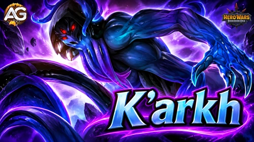
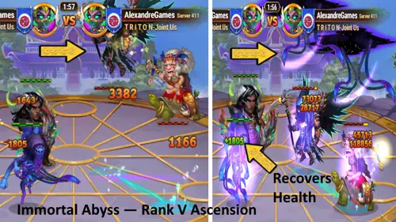
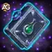

敵が空中に打ち上げられた瞬間、カークが味方のコントロールスキルを強烈な一撃へと変えます。育成素材を使う前に理解してほしいのが、この瞬間です。ヒーローウォーズ：ドミニオン・エラでカークのダメージを引き出すには、カークを生存させながら敵を繰り返し打ち上げられるチームを作ることが重要になります。
私の出発点はシンプルです。「致命的な触手」を強化し、物理ダメージに必要なアーマー貫通を確保して、コンボが始まるまでカークを守ります。このガイドでは、スキル、アセンション、スキン、グリフ、アーティファクト、ペット、対策となる相手、戦旗、そして二つのチームを順に解説します。私のテストで相性のよかったウォドリンとの組み合わせも取り上げます。

📋 カーク攻略の目次
ヒーローウォーズ：ドミニオン・エラのカークとは？
カークは素早さを主能力とするウォリアーで、前衛で戦います。最大の特徴は「致命的な触手」です。カークが生きている間は、味方が打ち上げた場合も含め、空中に打ち上げられた敵を攻撃します。そのため、カイ、フェイスレス、ウォドリンは重要なパートナーになります。私はカークを、味方の保護と連携した打ち上げを必要とする物理攻撃の主力アタッカーとして扱っています。

- 主な役割： ウォリアー
- 主能力： 素早さ
- 配置： 前衛
- 対応するパトロネージ： フェンリス、マーラ、ヴェックス
- ソウルストーンの入手先： ソウルチェスト、ソウルアトリウム、エレメンタルトーナメントショップ
通常攻撃： 107,314の物理ダメージ（物理攻撃力の100%） 。この数値は敵のダメージ軽減を適用する前のもので、記載されている基本クールダウンは5.2秒です。
現在の環境におけるカークの総合評価
ここでは、コントロール能力、ダメージの潜在力、相乗効果、味方への依存度を基準に、私自身のビルドと対戦相性の評価を示します。これは編集上の判断に基づく評価であり、実測した勝率によるランキングではありません。
- コントロール： ★★★★☆ — 体力の少ない敵三体を打ち上げ、スタンさせられます。
- ダメージ： ★★★★★ — 打ち上げが通り、相手の物理防御に対応できれば、非常に高い瞬間火力を発揮します。
- 相乗効果： ★★★★★ — 味方の打ち上げが、そのままパッシブスキルのダメージにつながります。
- 自立性： ★★☆☆☆ — 保護、打ち上げ、対戦相手の選択によって結果が大きく変わります。
カークの最大ステータス — ヒーローウォーズ：ドミニオン・エラ
ここに示すのは、育成を完了したビルドの参考値です。一時的な戦闘バフやペットのパトロネージボーナスは含みません。完成後の状態を示す数値であり、初心者がカークを使い始める前に必要なステータスではありません。
| ステータス | 数値 | ステータス | 数値 |
|---|---|---|---|
| 知力 | 素早さ | 18,021 | |
| 力 | 体力 | 429,412 | |
| 物理攻撃力 | 107,314 | 魔法攻撃力 | |
| アーマー | 魔法防御 | ||
| アーマー貫通 | 命中 | ||
| クリティカル耐性 | パワー |
カークの長所と短所 — ヒーローウォーズのウェブ・フェイスブック版
✅ 長所
- 「致命的な触手」によって、自分と味方の打ち上げを物理ダメージに変えます。
- パッシブスキルのレベル条件を満たす敵にはダメージが倍になり、高い瞬間火力を生み出します。
- 「恐怖の結びつき」は体力が最も少ない敵三体に圧力をかけ、弱った相手を仕留める手段をチームに与えます。
- 「法則の否定者」は物理攻撃のブロックと追加エネルギーを両立し、「生存因子」は空中の敵への攻撃が当たることで回復をもたらします。
- 物理攻撃力は主力ダメージを伸ばすだけでなく、後から解放するアセンション効果の計算にも役立ちます。
❌ 短所
- 「致命的な触手」の発動にはカークが生存している必要があります。高火力のビルドでも、倒れた後は役に立ちません。
- 打ち上げを防がれると、ダメージと、空中の敵への攻撃に付随する回復の両方を妨げられます。
- アーマーの高い相手に物理ダメージを通すには、十分なアーマー貫通が必要です。
- 裂け目による物理攻撃のブロックは一時的な確率効果です。魔法ダメージ全般を防ぐものではありません。
- レベル条件のある効果、エネルギー獲得の阻害、回復阻害によって、コンボの安定性が下がることがあります。
- アセンションの強化は後半の育成要素であり、基本となる四つのスキルへの投資に置き換わるものではありません。
カークのスキル育成優先順位 — ヒーローウォーズ：ドミニオン・エラ
カークが打ち上げをダメージへ変える仕組み、最初にゴールドを使うべきスキル、そして後から解放するアセンションが攻撃圧力と生存力をどう高めるかを解説します。
初心者向けの育成順序： 致命的な触手 → 恐怖の結びつき → 法則の否定者 → 生存因子。レベル条件のあるスキルは、対戦する敵のレベルに近い状態を維持します。下の各項目はゲーム内の表示順のままにしており、優先度はアセンション解放前を基準にしています。
第1スキル — 恐怖の結びつき
ゲーム内の説明： カークは体力が最も少ない敵三体を空中へ打ち上げます。対象の敵が落下すると、2秒間スタンします。対象のレベルが130を超える場合、スタンの成功率が下がります。

スキルの解説： この必殺技は打ち上げと2秒間のスタンを与えます。基本の必殺技自体には直接ダメージの計算式がなく、「致命的な触手」が追撃を担当します。そのダメージは 対象ごとに107,314の物理ダメージ、ダメージが倍になる条件を満たす場合は214,628です。「恐怖の結びつき」を準備、「致命的な触手」を実際の攻撃と考えると分かりやすくなります。これらは軽減前の参考値であり、その分だけ確実に体力を減らせるという意味ではありません。
効果： 体力が最も少ない3体が対象で、着地時に2秒間スタンします。表示されているスタンのレベル上限は130です。
育成優先度： 非常に高い — スタンを安定させるため、敵に対して十分なスキルレベルを維持します。自分で打ち上げコンボを始められますが、ダメージ面で最初に投資するのは、味方の打ち上げでも働く「致命的な触手」です。
スキルアニメーション情報
- 種類： 必殺技
- 対象数： 3
- スタン時間： 2秒
恐怖の残響 — ランクⅡのアセンション
アセンション効果： 「恐怖の結びつき」の使用後、体力が最も少ない敵の足元に範囲が出現し、8秒間、毎秒ダメージを与えます。三段階目の強化では、範囲が消えるときに、その中心に最も近い敵を空中へ打ち上げます。

スキルの解説： この強化により、最初の打ち上げの後も継続的に圧力をかけられます。初期値は 毎秒6,029ダメージ（物理攻撃力の4.5% + 1,200）で、その後は 8,039（物理攻撃力の6% + 1,600） 、さらに 10,156（物理攻撃力の7.6% + 2,000）へ増加します。最後の強化でも毎秒10,156という数値は変わらず、終了時の打ち上げが追加されます。カークが生存していれば、その打ち上げでも「致命的な触手」を発動できます。計算に使う能力は物理攻撃力ですが、提供された効果説明には、この範囲が与えるダメージの種類が明記されていません。
後半の育成で重要になる理由： 敵を打ち上げる追加の機会が生まれますが、まずアセンションを解放し、最後の強化を購入する必要があります。この追加の打ち上げを最初から使える前提で、序盤のチームを組まないことが大切です。
第2スキル — 法則の否定者
ゲーム内の説明： カークは次元の裂け目を開き、8秒間、敵の物理攻撃をブロックする可能性を得ます。ブロックした攻撃一回ごとに、追加のエネルギーを獲得します。

スキルの解説： 8秒間、ブロックの対象となる物理攻撃を受けるたびに、 52%のブロック確率が適用されます。ブロックに成功すると、さらに 15.5%の追加エネルギーを獲得し、次の必殺技につなげやすくなります。これは防御とエネルギー獲得の効果であり、直接ダメージの計算式はありません。必ずブロックできるわけではなく、魔法攻撃をブロック可能な物理攻撃へ変える効果でもありません。
ブロック確率の計算式： 52%（0.2 × スキルレベル + 26）。
追加エネルギーの計算式： 15.5%（0.05 × スキルレベル + 9）。
育成優先度： 高い — ブロック回数が増えるほど生存しやすくなり、追加エネルギーを得る機会も増えます。私は打ち上げとダメージのスキルより後に置きますが、最初の有効なコンボを出す前に物理攻撃で倒されるなら、優先順位を上げます。
スキルアニメーション情報
- 種類： 定期発動
- クールダウン： 18秒
- 持続時間： 8秒
第3スキル — 致命的な触手
ゲーム内の説明： カークが生きている間、空中に打ち上げられたすべての敵を攻撃します。敵のレベルが130以下なら、ダメージが倍になります。対象のレベルが130を超える場合、ダメージが倍になる確率が下がります。

スキルの解説： 敵の打ち上げが成功するたびに、カークはこのパッシブスキルで攻撃する対象を得ます。「恐怖の結びつき」、フェイスレス、カイ、ウォドリンのどれが打ち上げたかは問いません。一撃ごとのダメージは 107,314の物理ダメージ（物理攻撃力の100%）です。レベル条件を満たす敵に対しては、 214,628の物理ダメージ（物理攻撃力の200%） になります。いずれも軽減前の数値です。したがって、条件を満たす敵三体を一度に打ち上げると、 合計643,884の軽減前物理ダメージを、その三体に分けて与える計算になります。
ダメージの計算式： 107,314（物理攻撃力の100%）。倍のダメージになる攻撃： 214,628 (2 × 107,314)。
育成優先度： 非常に高い — 味方の打ち上げをすべてダメージに変えるため、私の最優先スキルです。表示される攻撃の計算式は物理攻撃力に依存しますが、レベル条件があるため、スキルレベルへの投資も重要になります。
スキルアニメーション情報
- 種類： パッシブ
- 発動条件： カークが生存している間に敵が空中へ打ち上げられること
- ダメージが倍になるレベル上限： 記載されているスキルレベルでは130
第4スキル — 生存因子
ゲーム内の説明： 空中に打ち上げられた敵への攻撃によって、与えたダメージの一部に相当するカークの体力が回復します。

スキルの解説： カークは、 与えたダメージの27.5% に相当する体力を、対象となる空中の敵への攻撃で回復します。このスキル自体が別のダメージを与えるわけではありません。たとえば、空中の敵への一撃で実際に与えたダメージが 100,000の物理ダメージなら、基本の回復量は 27,500の体力です。これは回復量の補正を適用する前の数値です。敵のアーマーでダメージが減ると、そのダメージを元にする回復量も減り、回復阻害によって実際の回復がさらに抑えられることもあります。
回復量の計算式： 与ダメージの27.5%（0.25 × スキルレベル − 5）。
育成優先度： 中〜高 — この回復には実際のダメージが必要なので、まず空中の敵に安定してダメージを与えることを優先します。基本コンボを整えた後で強化し、カークが序盤を生き延びても打ち上げの合間に回復しきれない場合は、実際の育成優先度を上げます。
不死の深淵 — ランクⅤのアセンション
アセンション効果： 初回の解放では、 与ダメージに対する追加の回復率5%が加わります。強化すると、この追加分は 7%、次に10%へ増えます。最終強化では、カークの体力が 20%を下回ったとき、一度限りの退避も発動します。2秒間深淵に移動して敵の攻撃を避け、体力を 100,486回復します（物理攻撃力の75% + 20,000）。

スキルの解説： 追加回復は回復の循環を強化し、最後に得られる退避効果は次のコンボまでの時間を稼ぐ助けになります。記載されている基本回復率に10パーセントポイントを追加すると、 回復率は37.5%（27.5% + 10%）になります。退避時の独立した回復量は物理攻撃力に依存し、一度の戦闘で一回だけ発動します。計算上は物理攻撃力107,314のときに100,485.5となり、表示値は100,486です。
後半の育成で重要になる理由： これはランクⅤまで進めた後に得られる、終盤育成の安全策です。最終強化を解放するまでは、タンクと支援スキルで序盤を守ります。基本の「生存因子」には、この退避効果は含まれません。
カークのおすすめスキン — ヒーローウォーズ：ドミニオン・エラ
カークのスキンは、解決したい問題から選びます。物理ダメージをアーマーに通し、触手の攻撃を強め、その後でカークを倒してくる脅威への対策を整えます。
基本となるスキン育成順序： ステラ → セレスティアル／マスカレード → デフォルト → 対戦相手に応じた防御。セレスティアルとマスカレードは記載上のステータスボーナスが同じなので、どちらを最初の物理攻撃力スキンにしても構いません。必要な素材の総量が少ないデフォルトスキンも、手持ちの素材に合わせて並行して育てます。解放したスキンのボーナスは累積するため、装着する見た目は好みで選べます。
デフォルトスキン
ステータス増加：素早さ +1,365
- 素早さから得られる物理攻撃力： +4,095
- 素早さから得られるアーマー： +1,365
素早さは各ポイントにつき物理攻撃力2とアーマー1を与えます。さらに、カークの主能力は素早さなので、物理攻撃力を追加で1得ます。
育成優先度： 高い — 攻防を効率よく伸ばせる強化です。主能力である素早さはダメージとアーマーの両方を増やします。序盤に便利ですが、最終的なダメージ増加量では、物理攻撃力を直接上げるスキンのほうが大きくなります。
最大レベルまでに必要な素早さのスキンストーン合計：  30,825。
30,825。
ステラスキン
ステータス増加：アーマー貫通 +10,650
育成優先度： 非常に高い — アーマーの高い敵に対する、私の最初の攻撃面の目標です。触手の攻撃を強くしても、アーマーに吸収されるなら効果は小さくなります。狙う相手のアーマーをすでに貫通できているなら、追加の物理攻撃力のほうが役に立ちます。
最大レベルまでに必要な素早さのスキンストーン合計：  55,410。
55,410。
ダークデプススキン
ステータス増加：魔法防御 +10,650
育成優先度： 低い — ダメージ強化ではなく、特定の対戦相手への防御策です。魔法による圧力でカークが倒れるなら、早めに優先度を上げます。物理攻撃のブロック確率を高めるものではありません。
最大レベルまでに必要な素早さのスキンストーン合計：  55,410。
55,410。
セレスティアルスキン
ステータス増加：物理攻撃力 +7,095
育成優先度： 高い — 通常攻撃と「致命的な触手」を直接強化し、「生存因子」の回復につながるダメージも増やせます。二つのアセンションの計算式にも役立ちます。
最大レベルまでに必要な素早さのスキンストーン合計：  55,410。
55,410。
マスカレードスキン
ステータス増加：物理攻撃力 +7,095
育成優先度： 高い — 記載されているボーナスと用途はセレスティアルと同じです。先に入手できるほうから育成し、アーマー貫通を十分に確保した後で、もう一方も追加します。
最大レベルまでに必要な素早さのスキンストーン合計：  55,410。
55,410。
ソーラースキン
ステータス増加：アーマー +10,650
育成優先度： 中程度 — 裂け目の効果がない時間やブロックに失敗したときに、物理攻撃を耐えやすくします。物理の瞬間火力で最初のコンボを止められるなら、早めに優先します。
最大レベルまでに必要な素早さのスキンストーン合計：  55,410。
55,410。
ウィンタースキン
ステータス増加：魔法防御 +21,300
育成優先度： 中程度 — 記載されている魔法防御ボーナスが大きく、厳しい魔法編成との対戦に向いています。どの状況でも最初に投資すべきスキンではありません。ダークデプスと価値を比べる前に、入手しやすさと育成コストも考慮します。
最大レベルまでに必要な素早さのスキンストーン合計：  110,520。
110,520。
カークのグリフ育成優先順位
グリフ素材は、カークに最も効果のある能力から使います。アーマー貫通と物理攻撃力を優先し、体力とアーマーで攻撃できるだけの生存時間を確保します。
基本となるグリフ育成順序： アーマー貫通 → 物理攻撃力 → 素早さ → 体力 → アーマー。攻撃する前に倒れるなら、まず生存を妨げている防御面の問題を解消します。下の表示順序はゲーム内と同じです。
第1グリフ — 体力
ステータス増加：体力 +62,200
育成優先度： 中〜高 — 体力を増やすと最初のコンボまで生き延びやすくなり、回復が働く余地も生まれます。早い段階で倒されることが問題なら、ダメージより先に育てます。
第2グリフ — 素早さ
ステータス増加：素早さ +1,135
育成優先度： 高い — 素早さを主能力とするカークには、物理攻撃力+3,405とアーマー+1,135を与えます。攻撃面と役立つ防御強化を両立できます。
素早さの換算： 1,135 × 3 = 物理攻撃力+3,405、1,135 × 1 = アーマー+1,135。
第3グリフ — 物理攻撃力
ステータス増加：物理攻撃力 +4,340
育成優先度： 非常に高い — 「致命的な触手」と通常攻撃を直接強化します。空中の敵への攻撃で得る回復の元になる、軽減前のダメージも増やせます。

第4グリフ — アーマー
ステータス増加：アーマー +6,500
育成優先度： 中程度 — 裂け目を使えないときやブロックに失敗したときの物理攻撃対策に役立ちます。魔法の脅威に対する魔法防御の代わりにはなりません。

第5グリフ — アーマー貫通
ステータス増加：アーマー貫通 +6,500
育成優先度： 非常に高い — アーマーの高い相手への、最初のダメージ用グリフです。物理攻撃が本来の力を発揮しやすくなります。相手のアーマーに十分対応できたら、物理攻撃力へ重点を移します。
カークのアーティファクト育成優先順位 — ヒーローウォーズ：ドミニオン・エラ
カークのアーティファクトは、安定して物理ダメージを与えることを軸に育成します。本は貫通、武器はチーム強化、指輪は役立つ素早さを提供します。
基本となるアーティファクト育成順序： 錬金術師の書 → カークのエッセンス → 素早さの指輪。武器が安定して発動する価値と、本が常に与える価値を比較します。育成素材と星の進化は、それぞれ別の要素として考えます。

武器アーティファクト — カークのエッセンス
発動時のステータス増加： 物理攻撃力 +33,459 をチーム全体に9秒間付与します。
「恐怖の結びつき」を使用すると、武器のバフが発動する可能性があります。発動確率はアーティファクトの進化状況によって変わります。表示されているボーナスは一時的な戦闘効果であり、キャラクター画面の物理攻撃力に常時加わる数値ではありません。
育成優先度： 高い — 必殺技に合わせた時間帯のチーム全体の物理ダメージを高め、バフが続いている間の追加の触手攻撃も強くします。発動の安定性を整えてからステータスボーナスを伸ばし、カーク自身の貫通も忘れず確保します。

本アーティファクト — 錬金術師の書
常時得られるステータス増加： 物理攻撃力 +5,577 、さらに アーマー貫通 +16,731。
育成優先度： 非常に高い — 継続的なダメージを伸ばすための、私の最初の投資先です。どちらの能力も物理攻撃の主力アタッカーとしての仕事を助け、特にアーマーの高い相手には貫通が重要になります。

指輪アーティファクト — 素早さの指輪
ステータス増加：素早さ +6,249
- 素早さから得られる物理攻撃力： +18,747
- 素早さから得られるアーマー： +6,249
育成優先度： 中〜高 — 常時ダメージを大きく伸ばし、アーマーも追加で得られます。私は通常、本の貫通と、チームに対する武器の有用性を整えた後で育成します。
カークにおすすめのパトロネージ
カークに対応する三体のパトロンを比較します。フェンリスはバランスの取れた物理ビルド、ヴェックスは味方と共有するダメージ圧力、マーラはコントロール時間の延長に向いています。
基本のおすすめ順序は、 フェンリス → ヴェックス → マーラ です。これはカークを主力アタッカーに据えるチームを想定した順位で、対戦相手によって変わります。パトロンは一体のヒーローに割り当てるものであり、チームのアクティブペットは別に選びます。
第1位 — フェンリス

フェンリス： 物理攻撃力とアーマー貫通が主力の攻撃を支えます。「盲目の怒り」は、記載のパトロネージ参考値で、通常攻撃が40%の確率で敵を2秒間暗闇にする効果です。ダメージ用の能力に加え、物理アタッカーを妨害できるため、私はフェンリスを第一候補にします。暗闇は通常攻撃に付随する効果なので、触手の攻撃すべてが暗闇を与えるとは考えないようにします。
暗闇の付与確率： 40%（パトロネージパワーの0.32% + 4.905）。
第2位 — ヴェックス

ヴェックス： こちらも物理攻撃力とアーマー貫通を提供します。主人の物理攻撃は、8秒後に消える「深い傷」を最大五スタックまで蓄積し、その後にマークされた相手へ与える味方全員の物理攻撃を強化します。複数の味方が同じ敵を繰り返し攻撃するなら、ヴェックスの魅力が増します。ただし、下で紹介する二つの編成では、引き続きフェンリスを基本の選択にしています。
スタックごとの追加ダメージ： 記載のパトロネージ参考値では5,036。数値はパトロネージパワーによって変わります。
第3位 — マーラ
マーラ： 魔法攻撃力と魔法防御を与えますが、物理攻撃の主力アタッカーを育てる方針には直接結びつきにくい能力です。「致命的な弱点」は「恐怖の結びつき」の後のスタンを延長できます。持続時間が200%増加し、効果が完全に適用されるなら、基本の2秒が6秒になります。延びるのはスタン時間で、打ち上げ自体ではありません。「致命的な触手」の発動回数を増やす効果もありません。
コントロール時間の増加率： 200%（パトロネージパワーの1.77% + 4.45）。
マーラが延長できるコントロール効果の一覧は、 マーラの公式ページで確認できます。上の順位は、それらの効果を私ならカークとどう組み合わせるかを示したものです。
ヒーローウォーズ：ドミニオン・エラでカークに対抗する方法
有効な対策は、カークの打ち上げを止める、必殺技を遅らせる、追加エネルギーの獲得を逆に利用することです。相手のチーム全体を見て選びます。どのカーク編成に対しても、一体のヒーローだけで必ず勝てるわけではありません。

アンドヴァリ
「生きた大地」はアンドヴァリと最も近い味方を位置移動や打ち上げから守り、前にいる味方を優先します。打ち上げを防げば、それに対応する「致命的な触手」の攻撃と回復の機会を同時に消せます。重要な対象を守れる位置に配置することが大切です。ドミニオン・エラでは、アンドヴァリより後ろの味方全員を守る効果ではありません。 ヒーローの公式情報。

ヨルガン
エネルギー獲得を阻害すると、「恐怖の結びつき」と武器バフの時間帯を遅らせられます。その間、カークは自分でコンボを始められず、味方の打ち上げを待つことになります。ヨルガンは効果を与えられるまで生存させます。また、必殺技を遅らせても、フェイスレスやウォドリンが引き起こすパッシブ攻撃までは無効にできない点に注意します。 ヒーローの公式情報。

サトリ
「法則の否定者」はブロックに成功すると追加エネルギーを得るため、カークがサトリの追加の狐火マークを受ける原因になります。サトリはその後、蓄積したマークを魔法ダメージへ変えます。この対策には時間と、マークの爆発を成功させることが必要です。その前にサトリを倒すか行動不能にできれば、結果が変わる可能性があります。 ヒーローの公式情報。
カークにおすすめの戦旗 — ヒーローウォーズ：ドミニオン・エラ
戦旗はカークだけでなく、編成全体に合わせて選びます。序盤の防御を強化する、回復を伸ばす、仕留めたい敵の回復を減らす、という観点で考えます。

要塞の戦旗
効果： 戦闘開始時、味方は最前列のヒーローのアーマーの30%に相当するアーマーを得ます。この効果は20秒かけて5%まで弱まります。赤い模様を一つ挿入するごとに、効果時間が3秒延びます。
カークとチームへの利点： 下で紹介するタンクが先頭に立つ編成で、開幕の物理攻撃が厳しい相手への基本の選択です。先頭のタンクのアーマーを基準に守りを強化し、カークが打ち上げコンボまで到達する時間を作ります。選ぶ前に、そのタンクのアーマーと敵の貫通能力を確認します。

回復の戦旗
効果： すべての回復量を10%増加させます。
カークとチームへの利点： マーサの回復とカークの「生存因子」を支えます。序盤は耐えられても長い攻防で負ける場合に実用的です。ただし、阻害された回復を無理に通すことはできないため、相手の回復阻害との兼ね合いを見て判断します。

衰退の戦旗
効果： 敵チームの回復量を10%減少させます。
カークとチームへの利点： 打ち上げと次の打ち上げの合間に、体力の少ない敵が回復するのを抑えます。相手の回復が障害となり、自分のチームの防御はすでに足りている場合に検討します。
配置が重要： カークは前衛のウォリアーですが、下の編成ではウォドリンかアスタロスがその前に立ちます。そのため、最前列のヒーローを対象にする戦旗は、そのタンクを直接強化します。「準備」は最後列のヒーローを対象とし、この二つの編成ではマーサに効果が向かいます。カークへ直接エネルギーを与えるわけではありません。
カークのおすすめチーム — ヒーローウォーズ：ドミニオン・エラ
私なら、まずこの二つの編成から試します。表は左が後衛、右が先頭のタンクで、それぞれのヒーローの上にパトロンを配置しています。どちらの編成でもアクティブペットはアクセルです。パトロネージの割り当ては、それとは別に示しています。
このパトロンを選ぶ理由： フェンリスはカークの物理攻撃面を強化します。マーリンはフェイスレスの魔法ダメージを与えるスキルを加速し、打ち上げスキルもその対象になるため、コンボの準備をより頻繁に進められます。オリバーはヨルガンの耐久力を高め、ロビンの定期的な追加エネルギーはマーサが必殺技を使う助けになります。アクセルのパトロネージは、先頭のタンクが単発の強力な攻撃で受けるダメージを制限します。アクティブペットのチーム用スキルと、これら個別のパトロネージ効果は区別して考えます。
チーム1の分析 — ウォドリンの打ち上げとの相乗効果
編成： ウォドリン（アクセル）、カーク（フェンリス）、ヨルガン（オリバー）、フェイスレス（マーリン）、マーサ（ロビン）。 アクティブペット： アクセル。 最初に選ぶ戦旗： 開幕の物理攻撃が厳しい相手には要塞。
| チームのペット／戦旗 | 後衛 | サポート | サポート | 主力アタッカー | 先頭のタンク |
|---|---|---|---|---|---|
| アクティブペット | パトロン | パトロン | パトロン | パトロン | パトロン |
| 戦旗 | カーク |
私のテストで特に目立ったのが、この組み合わせです。ウォドリンは敵を打ち上げ、カークの「致命的な触手」につなげられます。フェイスレスも打ち上げ役になるため、主力アタッカーは自分の必殺技以外にも攻撃機会を得ます。ヨルガンが敵のエネルギーを圧迫し、マーサはチームがコンボを組み立てるために必要になる長めの戦闘を支えます。
私ならこう運用する： 最初の攻防はカークを守り、その後で、ウォドリンとフェイスレスがカークの攻撃できる相手を本当に打ち上げているかを確認します。条件を満たしたウォドリンの通常攻撃のクリティカルは敵を打ち上げられますが、根や棘のクリティカルまで同じ働きをするとは考えないようにします。武器バフの時間帯を使って物理の追撃を強め、継戦能力が実際の課題なら回復の戦旗へ切り替えます。
確認したい点： アンドヴァリは重要な敵を打ち上げから守り、エネルギー獲得の阻害はこちらの初動を遅らせることがあります。カークが最初のコンボ前に倒れるなら、さらに大きなダメージ値を目指すより、まず実戦での耐久力を増やします。コンボの準備を安定させるため、ウォドリンとフェイスレスのレベルも敵に対して十分な状態に維持します。
チーム2の分析 — アスタロスによる保護
編成： アスタロス（アクセル）、カーク（フェンリス）、ヨルガン（オリバー）、フェイスレス（マーリン）、マーサ（ロビン）。 アクティブペット： アクセル。 最初に選ぶ戦旗： 序盤が安定し、回復が重要になるなら回復。
| チームのペット／戦旗 | 後衛 | サポート | サポート | 主力アタッカー | 先頭のタンク |
|---|---|---|---|---|---|
| アクティブペット | パトロン | パトロン | パトロン | パトロン | パトロン |
| 戦旗 | カーク |
主力アタッカーの周囲にアスタロスの保護能力と復活を用意したい場合、私はこの編成を使います。味方の打ち上げ役の中心は引き続きフェイスレスで、カークが自分の必殺技を加え、ヨルガンとマーサがチームへコントロールと回復を提供します。アスタロスの復活は味方を救えますが、カーク専用ではありません。誰が復活を消費するかも確認します。
私ならこう運用する： 最初の打ち上げまで到達できるだけの序盤の防御を確保し、その後はマーサと「生存因子」で失った体力を取り戻します。回復の戦旗はその方針を強化します。回復が間に合う前に開幕の物理ダメージで編成が崩れる場合は、代わりに要塞を選びます。
確認したい点： ウォドリンを外すことで追加の打ち上げ手段が一つ減るため、フェイスレスと「恐怖の結びつき」への依存度が高まります。この編成でも十分なアーマー貫通と、打ち上げを防ぐ相手への対策は必要です。どちらかを自動的に勝てる編成と考えず、実際の防衛チームに対して両方を試します。
Alexandre GamesのYouTube動画
▶️ カークを育てる前に見ておきたい育成ガイド【ヒーローウォーズ／Web・Facebook版】

カーク育成に向けた最後のアドバイス
私がカークを最初から育てるなら、「致命的な触手」と「恐怖の結びつき」にゴールドを使い、本、グリフ、ステラスキンでアーマー貫通を確保してから、物理攻撃力を伸ばします。序盤の生存に問題が出たら、その時点で直します。味方の打ち上げをダメージに変えるパッシブスキルは、カークが生存していなければ働かないからです。
フェンリスと保護を整えた編成から始め、ウォドリンの追加の打ち上げ相乗効果と、アスタロスの安全性を比較します。アセンションはビルドにさらなる攻撃圧力と、後から使える退避手段を与えます。ただし、基本は変わりません。カークを生かし、敵を打ち上げ、その一撃をしっかり生かすことです。
注目のヒーローを紹介するガイドで、新たなスキルをチェック！
 エヴァ攻略 — ヒーローウォーズ：ドミニオン・エラのサポートヒーロー
エヴァ攻略 — ヒーローウォーズ：ドミニオン・エラのサポートヒーロー
 マーサのリワーク攻略 — ヒーローウォーズ：ドミニオン・エラの回復の名手
マーサのリワーク攻略 — ヒーローウォーズ：ドミニオン・エラの回復の名手
意見を聞かせてください！
ウォドリンの打ち上げ相乗効果とアスタロスの保護、どちらのカーク編成がうまく機能していますか？コメント欄で経験を共有したり、苦手な対戦相手について質問したりできます。